The protege plugin.
Instalation notes
Requierments
Instalation
Download the owl2query protege plugin jar file. Copy the downloaded jar file into $PROTEGE_HOME/plugins directory and restart Protege. If the OWL2Query tab is not opened (it is not shown in the tab list) you must open the OWL2Query view. To open the view, go to the protege menu bar and select Window->Views->Misck views->OWL2Query.
GUI Map
Figure 1 shows the gui map, the parts of the plugin highlited in red borders. The highlited areas are linked to the topics that describes them.
Toolbar
First row in the plugin is the toolbar, which contains
demo
, new  , open
, open  and save
and save  query buttons. Next to them are two radio buttons used to switch between the graph view and the sparql view. The last two buttons in the toolbar are the undo
query buttons. Next to them are two radio buttons used to switch between the graph view and the sparql view. The last two buttons in the toolbar are the undo  and redo .
and redo .
Prefix editor
The prefix editor is capable of editing the short form of the prefix and to toggle the usage of the short form of the prefix in query. The editor is organized in a table the rows of which are the individual prefixes. The table has three columns. The first column in the table represents the usage state of the given prefix, it is shown as a checkbox component. The second column is rendered as text field and representsthe full prefix value. This field is not editable. The third is also rendered as a text field and it represents the short form of the prefix. This filed is editable. The prefix editor contains logic toensure the consistency of the short form prefixes(unique value for eachrow in the last column in the table).
On top of the table there are four buttons. The first two buttons are used to manipulate the usage column.
-
the invert usage button inverts the usage column.
- use all button selects all the checkboxes in the usage column, makes all the prefixes to be used.
The last two buttons are used to restore the default values of the short from of the prefixes.
- the restore selected rows button will restore only the selected (highlighted) rows in the table
- the restore all button will restore all rows.
Variable editor
The variable editororganizes the variables in a table. Each row in the table representsone variable. The first column is the name or the label of thevariable. This column is represented as a not editable text field. Theother five columns are rendered as a checkbox. Second Column representswhether the variable is distinguished. This column is editable if thevariable is used only in the abox. The third column shows whether thevariable is a result variable. This column is editable if the variableis distinguished. The last three columns represent in what boxes it isbeing used, abox, tbox, abox. The variable can be used in all of theboxes at the same time and will be used in at least one. These threecolumns are never editable.
Layout editor
The layout editormanages the layouts that are being associated with the query. The listshows the names of the layouts. The names of the layouts can be edited.Under the list there are three buttons snapshot, apply and delete. Thesnapshot button saves the current layout of the graph into a new layoutand adds it to the list. The apply button uses the selected layout inthe list to arrange the nodes in the graph. The delete button deletesall the selected layouts in the list. Layouting the graph using theapply button will change only nodes that were part of the graph at thetime when the layout was created using the snapshot button. New nodescreate after the time the layout was created will not change.
Query Graph
Here only basicfunctionality of the graph will be explained. Creating concrete queryatoms and more detailed explanation of the functionality will beexplained later. The graph editor has three ways in which one can editthe graph. The most intuitive one is interacting with the graph areausing mouse gestures and the keyboard. By interacting with the graph wecan move nodes and manually layout the graph. This however does notchange the query it self. To change the query we can add and removenodes and edges. To add a abox variable node simply doubleclicksomewhere in the free abox area in the graph (where there are no nodesand edges). Creating tbox and rbox variables is the same, doubleclickon the area where you wish to create a variable. Adding edges is onlypossible when you have two nodes.
To add and edge place the mousecursor anywhere near the border of the node. The cursor changes to theedge tool cursor if the node can have edges. If the cursor changedpress the right mouse button and drag to the node you wish to connectto. When the cursor is over the target node it will change the cursor. If the edge you are trying to create is correct an the cursor changes to accept edge cursor, releasing the mouse button will cause the edgeto be created. If the target node is not connectable to the source node(the one that the drag was started on) the cursor is changed to denyedge cursor. Releasing the pressed button will not do anything. In the case of abox edge (edge that both nodes are abox nodes) a popup menu will be shone where we can choose the type of edge we want to create.
Deleting is done with the delete key on the keyboard. When the delete is pressed the selection in the graph is deleted. If the selection was a node all the edges that are connected to the node are deleted.
The other way to edit the graph is by editing the already created nodes andedges. The nodes are edited in the node editor. To edit a node singlenode is selected in the graph. The editor will appear on the right sidein the graph view. The editor changes upon graph selection and hides if the selection is empty or more than one elements are selected. When editing a node in the node editor it is necessary to press the apply button at the bottom in order to apply changes.
To edit an edge simply doubleclick the edge. A in place editor will popup at the at the pointthat was clicked. To apply the changes the apply button at button intheeditor must be clicked.
SPARQL query view
The query can bealso serialized in the SPARQL format. This is done by selecting the SPARQL radio button in the main toolbar of the plugin. The Sparql view consists of a simple text editor containing the query represented in sparql format.
SPARQL-DL preview
In this text field previews the query in SPARQL-DL format.
Resut panel
The result panel hastwo components a run/stop button at the top and a table in which theresults are shown. The run/stop button is disabled if the there is nota selected and started reasoner in the protege. If the button isenabled it runs the query and changes the button to a stop button. Ifthe query takes too long to execute one can stop the execution byclicking the button. Doing so will cause the plugin to try to stop thereasoner. After the execution is completed the button changes back toa run button. After a successful execution the result table is filledwith the result of the query. The columns in the table represent theresult variables and the rows are the different bindings of the resultvariables in the query. The table is view only, no editing issupported.
Edge Editors
The edge editors arebasically query atom choosers. The query atom list in the editorchangesbased on the type of edge that is being edited. The changes are appliedafter the apply button at the bottom of the form is clicked.
| 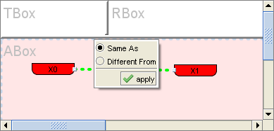 |
Fig. 7 ABox edge editor
|
 |
Fig. 8 ABox-TBox edge editor
|
 |
Fig. 9 TBox edge editor
|
 |
Fig. 10 RBox edge editor
|
Property Value Editor
The property valueeditor is basically a property list editor. We can add named object ordata properties to the list by using the current selection tree. Theselection tree represents the hierarchy of object or data properties.Wecan switch between the two trees using the radio object and databuttonsat the top of the editor. If any part of the query assumes that thenodethat represents the object of the property value query atom (the nodethat the arrow points to) either a object property or data property theeditor is constrained. In this case the editor is constrained to makeconsistent changes and therefore one of the radiobuttons is disabled.Toadd new rbox variable not present in the query click the text field,type the new variable name and press enter. To add a existing rboxvariable to the list click the arrow button on the right of the textfield. A popup list of existing rbox query variables shows. Select thecheck box next to the desired variables and click somewhere in theproperty value editor to hide the popup. To remove entries from thelist simply click the red cross next to the entry or select thedesired rows in the list and then click the remove selection buttonunder the list. To apply the changes click the apply button at thebottom of the editor.
Fig. 11 Property list editor with object property tree selection, used to edit property value query atoms.
 |
|
Fig. 11 Property list editor with object property tree selection, used to edit property value query atoms.
| 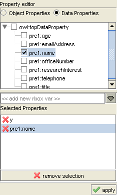 |
|
Fig. 11 Property list editor with object property tree selection, used to edit property value query atoms.
| 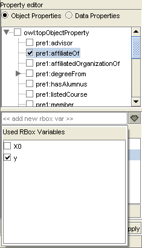 |
|
Abox node editor
The abox node editor three views variable, individual and literal. One can switch between the view using the radiobuttons at the top of the editor.
Variable node editor
The variable editor can only changethevariable name of the node. The field must contain a correct value inorder to be able to apply the change.
|
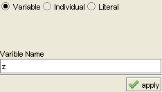 |
Fig. 12 ABox node editor, variable view
Individual node editor
The individualeditor is used to select the individual that the node will represent.This is done using the single selection list. By selection is meant aradio button selection. A value must be selected in order to be able toapply the changes made. For easier location in the list of individualsthey are alphabetically ordered. Another feature is that the selectionin the class hierarchy tree will filter the individual list. Instancesof the selected class will appear on top of the list and the rest oftheindividuals will be gray-colored. The text field under the selectionlist shows the selected individual if any. Clicking on the field thelist will scroll to the chosen individual.
|
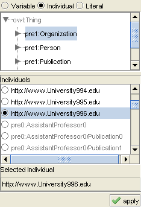 |
Fig. 13 ABox node editor, individual view
Literal editor
In the literal editor usethe the data type hierarchy to select a data type if desired. Use thetext field to enter the literal value. This field is mandatory, it mustcontain a value.
|
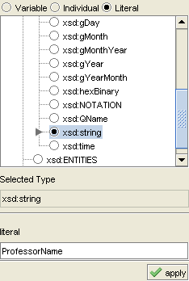 |
Fig. 14 ABox node editor, literal view
TBox Node editor
The tbox node editor has to viewvariable editor and constant editor. Switching between the view is doneusing the radiobuttons at the top of the editor
Variable node editor
The variable editor can only changethevariable name of the node. The field must contain a correct value inorder to be able to apply the change.
Constant editor
The constant editoris used to select an uri from the object or data property hierarchysingle selection trees. The hierarchy tree is selected using the objectand data property radiobuttons. Selection in the tree is also shown inthe "Selected Type" text field. Clicking the field will expand andscroll the tree to the selected property.
|
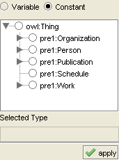 |
Fig. 15 TBox node editor, constant view
RBox Node editor
The rbox node editorhas two view a variable editor and a constant view. The can switchbetween the view using the variable and constant radio buttons. Thevariable editor can only change the variable name of the node. Thefieldmust contain a correct value in order to be able to apply the change.The constant editor is used to select a property uri from the object ordata property hierarchy single selection tree. The tree hierarchy canbe switched by selecting the object properties or the data propertiesradio buttons. The selection in the tree is also show in the SelectedProperty text field. By clicking this field the tree is expanding andscrolling to the selected value if it is not visible. In each view atthe bottom of the rbox editor there is a checkbox list of propertyattributes. They represent unary rbox query atoms. A shortrepresentation of the attribute labels is shown in the parentheses.Thisshort representation is used in the rbox node labels to visualize theproperties attributes . The list of attributes is filtered in thedifferent views of the editor or if the DataProperty attribute isselected in the variable view. The selection of the list is alsoconstrained. Non of the next couples of attributes can be selectedsimultaneously : DatatypeProperty-ObjectProperty, Symmetric-Asymmetric,Irreflexive-Reflexive. If the constraints are violated the olderselection of the conflicted attributes will be cleared. For example byselecting the Symmetric attribute the Asymmetric will be cleared if itwas already selected. To apply the changes click the apply button.
| 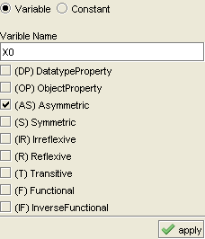 |
Fig. 16 RBoxnode editor, variable view
|
| 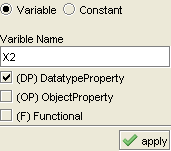 |
Fig. 17 RBox node editor, variable view with data property attribute selected
|
| 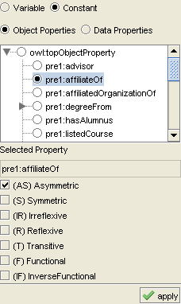 |
Fig. 18 RBox node editor, constant view with object property selection
|
| 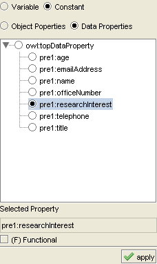 |
Fig. 19 RBox node editor, constant view with data property selection
|
Making query atoms
The SPARQL-DL queryis represented as a list of query atoms(graph representation). Whencreating a query graph one have to create the graphical representationof the query atoms (in most cases they are represented as edges in thegraph).
There are two ways to create query atoms.Unary query atoms (for now unary query atoms are present only in theRBox) are represented as letters in the description of a node. Tocreate, add or delete a unary query atom double click an rbox node. Therbox node editor will appear select the desired query atoms from thelist of checkboxes. Here is an screenshot of the editing(img)
The rest of thequery atoms are represented as edges between nodes. To add such queryatom to the graph one must add an edge between the desired two nodes.To delete edge query atoms use delete selection. Details about addingand deleting an edges can be found in the Query Graph section. If thereis a supported query atom between the nodes an edge query atom iscreated. In the case of binary query atoms an edge with default queryatom is created. The default value depends on the edge type. Editingthis query atoms is done by double clicking the edge. An in-placeeditorwill popup. Select the desired query atom from the list ofradiobuttons and click the apply button. Editing a property value atomis done by selecting the compound edge. An property value editorappearson the right of the graph. Use the editor to change the list ofproperties used in this query atom and click the apply button.
Conversion rules
The conversion of the query between graph, sparql and then again graph can change the graph (remove some of the nodes or addsome query atoms). This is because the graph that was converted inSPARQL contained nodes that were not used in any query atom. Theconversions separates the unused nodes in two categories constant andvariable nodes. Constant nodes are ignored. So the graph will notcontain any unused constant nodes after the switching from graph tosparql and back to graph. For variable nodes query atoms are added thatinclude so that the nodes are no longer unused. For abox variable nodesan "instance of" query atom with type argument OWLThing is added. Fortbox variable nodes a "subclass of" query atom is add with its secondargument OWLThing. For rbox variable nodes "subproperty of" query atomis added with its second argument TopObjectProperty. The change in thegraph is that new OWLThing constant tbox node and new TopObjectPropertyconstant rbox node are added (if they weren't present in the graph).Edges are added from unused abox nodes to the OWLThing node, fromunused tbox variable nodes to OWLThing node and from unused rboxvariable nodes to TopObjectProperty.
| 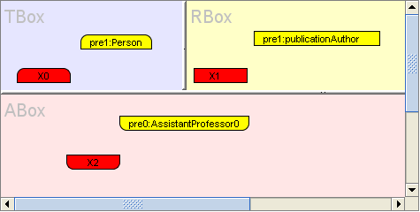 |
Graph before conversion
| 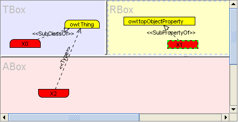 |
Graph after conversion
The query graph graphical representation
The SPARQL-DL query is represented asa list of query atoms. There are three ways to represent query atomsbased on the arity of the atom. Edge query atoms can be create betweentwo nodes of the same type (shape) and between an abox node and tboxnode. The edge query atoms in the graph have a description label(stereotype) which is the name of the query atom. The visual appearanceof the line and decoration at the end is changed to visually